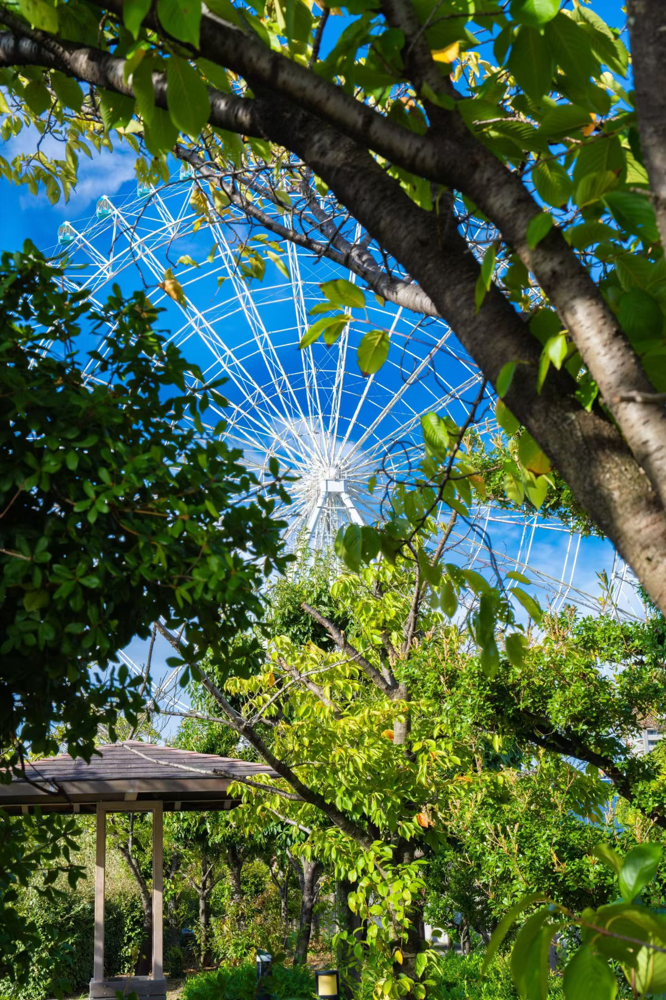
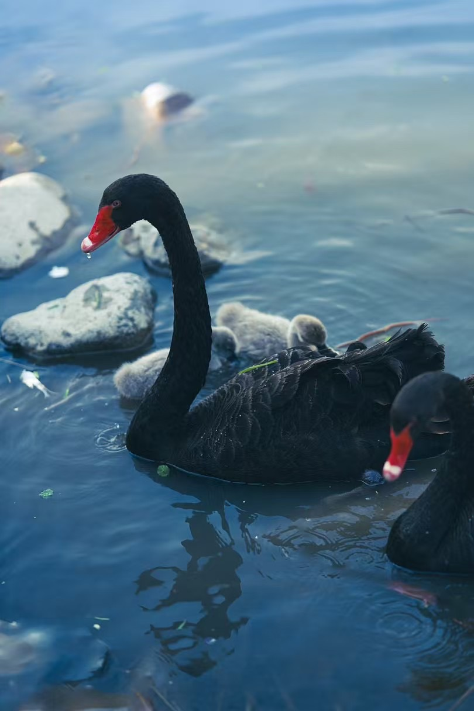
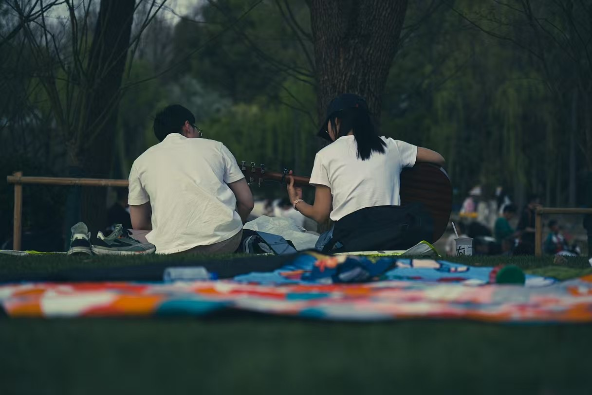
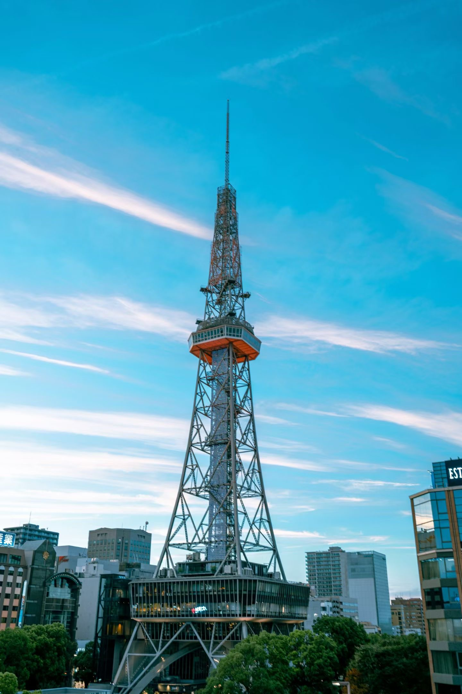
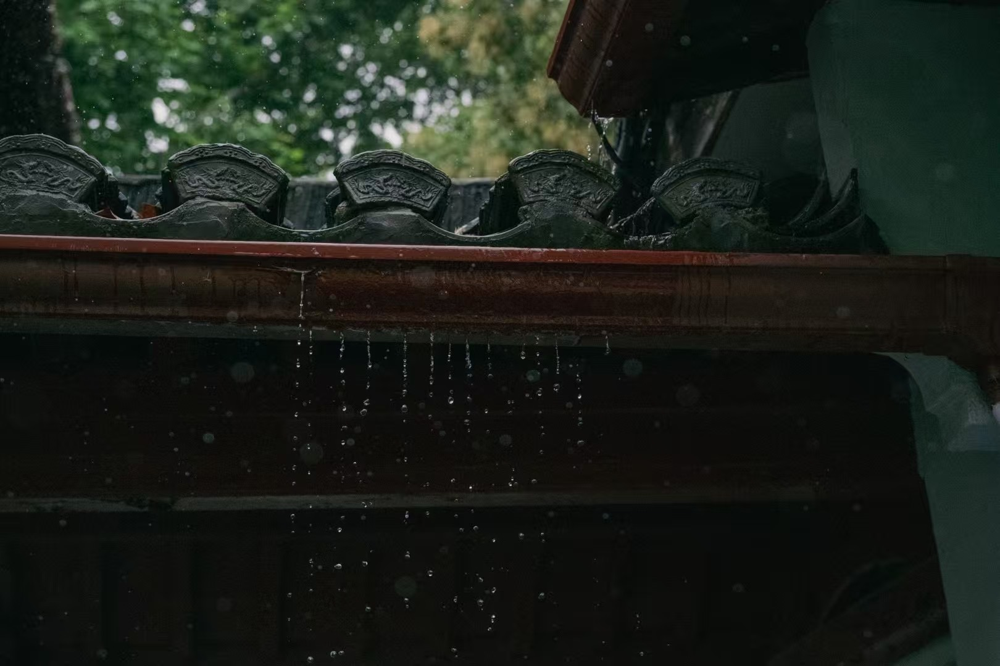
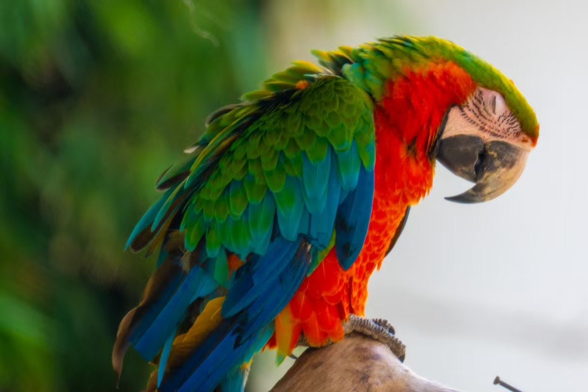

正在学习
搭建机器学习力场
锂离子电池水工艺开发
Highlights
搭建机器学习力场
锂离子电池水工艺开发
摄影 / 摸鱼
00:00:00
保持思考，保持记录。
Now
MLFF——将物理与数学结合，加速虚拟世界的最终钥匙！
Agent 开发，自动化计算模拟！
小游戏制作！
欢迎了解Flashbang！(网页目前维护中，内容随机生成，尚未更新)
顺利毕业！
Research
GMD 是我正在开发的分子动力学模拟软件，旨在提供高效、灵活且易用的工具，助力科研与学习。核心功能已初步实现，正在持续迭代优化中。欢迎关注项目进展！
整个项目分为三个部分：分子动力学模拟软件,MLIP机器学习力场模型,Active Learning监督模型
分子动力学模拟软件
结合简化等效网络,图神经网络与Transformer架构的MLIP机器学习力场模型
面向主动学习方案的实现整理与延伸尝试。
强融合LAMMPS和Allegro正在整理中，后续会按版本更新与实现记录发布。
Gallery





